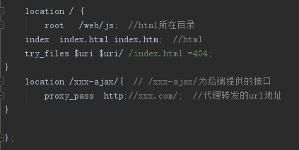

分享人：叶泽彪
目录
1.背景介绍
2.知识剖析
3.常见问题
4.解决方案
5.编码实战
6.扩展思考
7.参考文献
8.更多讨论
浏览器与服务器之间，采用 HTTP 协议通信。用户在浏览器地址栏键入一个网址，或者通过网页表单向服务器提 交内容，这时浏览器就会向服务器发出 HTTP 请求。
1999年，微软公司发布 IE 浏览器5.0版，第一次引入新功能：允许 JavaScript 脚本向服务器发起 HTTP 请求。
这个功能当时并没有引起注意，直到2004年 Gmail 发布和2005年 Google Map 发布，才引起广泛重视。
2005年2月，AJAX 这个词第一次正式提出，它是 Asynchronous JavaScript and XML 的缩写，指的是通过 JavaScript 的异步通信，从服务器获取 XML 文档从中提取数据，再更新当前网页的对应部分，而不用刷新整个网页。
后来，AJAX 这个词就成为 JavaScript 脚本发起 HTTP 通信的代名词，也就是说，只要用脚本发起通信，就可 以叫做 AJAX 通信。W3C 也在2006年发布了它的国际标准。
1.创建 XMLHttpRequest 实例
2.发出 HTTP 请求
3.接收服务器传回的数据
4.更新网页数据
使用XMLHttpRequest (XHR)对象可以与服务器交互，从URL获取数据。虽然XHR字面意思是由XML\Http组成，但 是它不是只能获取XML，它可以获取任何类型的数据，也支持Http以外的协议。
XHR本身是构造函数，可以使用new命令生成实例，它没有任何参数。
var request = new XMLHttpRequest();
创建好XHR对象后便可以使用open();发出Http请求，规定请求类型、URL以及是否异步处理请求。
request.open("POST","bbb/a/login",true);
method：请求的类型；GET 或 POST
url：文件在服务器上的位置
async：true（异步）或 false（同步）,不填写则默认为true
通常我们需要像 HTML 表单那样 POST 数据，就需要用setRequestHeader()设置HTTP头部。
request.setRequestHeader('content-type', 'application/x-www-form-urlencoded');
HTTP头部可以设置请求主体的类型（content-type），POST方法发送数据给服务器通常使用application/x-www-form-urlencoded类型来发送
使用send();方法（仅用于POST）将请求数据发送到服务器。
request.send("name=" + user.value + "&pwd=" + pwd.value);
如需获得来自服务器的响应，请使用 XMLHttpRequest 对象的 responseText 或 responseXML 属性。
responseText:获得字符串形式的响应数据。
responseXML:获得 XML 形式的响应数据。
var response = JSON.parse(request.responseText);
一般服务器的数据用JSON存取，获取响应数据的时候我们需要将其解析读取
获取响应数据后，我们需要将网页更新，这时我们需要使用 onreadystatechange 来根据XHR的状态 readyState 的变化，执行一些基于响应的事件。
XHR三个重要的属性：
（1）onreadystatechange 存储函数（或函数名），每当 readyState 属性改变时，就会调用该函数。
（2）readyState 存有 XMLHttpRequest 的状态。从 0 到 4 发生变化。 0: 请求未初始化; 1: 服务器连接已建立; 2: 请求已接收; 3: 请求处理中; 4: 请求已完成，且响应已就绪
（3）status, 200: "OK"; 404: 未找到页面
使用AJAX的时候我们经常需要解决跨域的问题，怎么利用nginx 反向代理解决跨域问题？
未配置好nginx反向代理的时候，我们向服务器发送请求的时候，浏览器就会报出这样的错误信息。
XMLHttpRequest cannot load ……
要实现跨域，主要注意修改添加nginx以下几项就可以了 GET - 从指定的资源请求数据。
POST - 向指定的资源提交要被处理的数据。
参考一：廖雪峰的官方网站
参考二：MDN web docs
参考三：菜鸟教程
感谢大家观看
BY : 叶泽彪